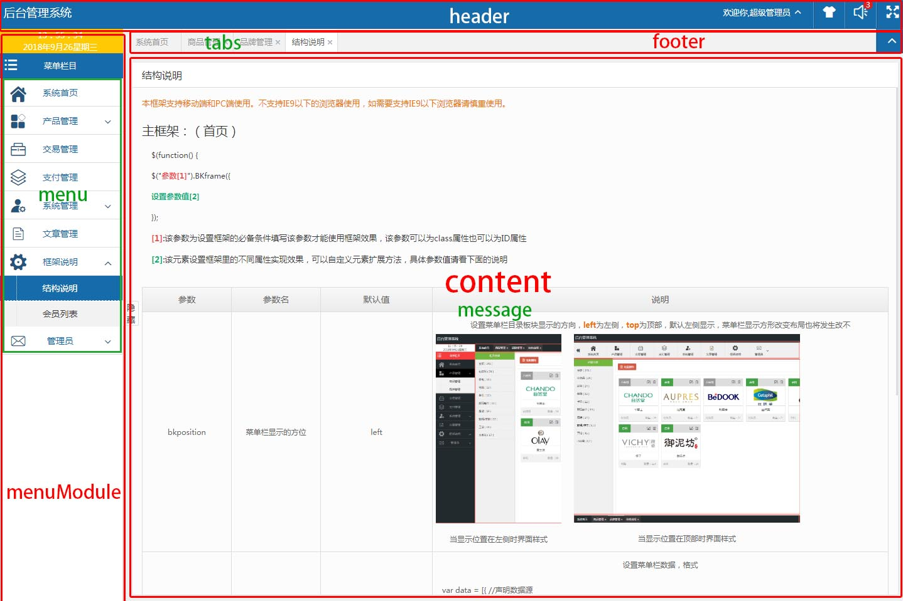
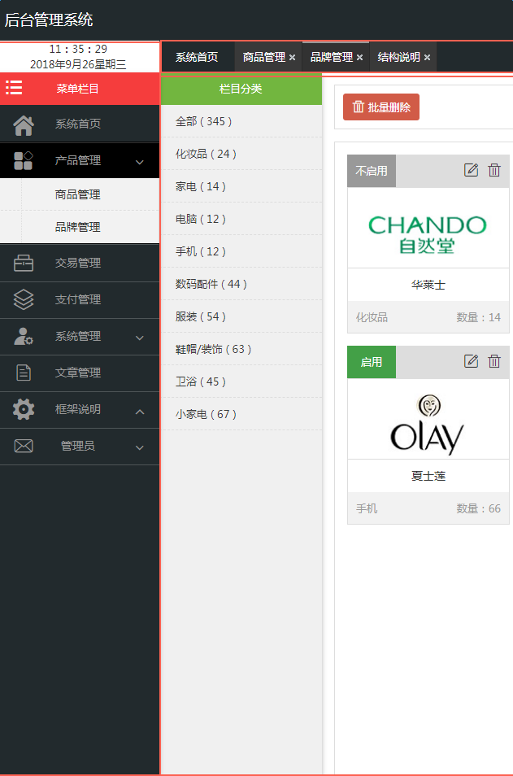
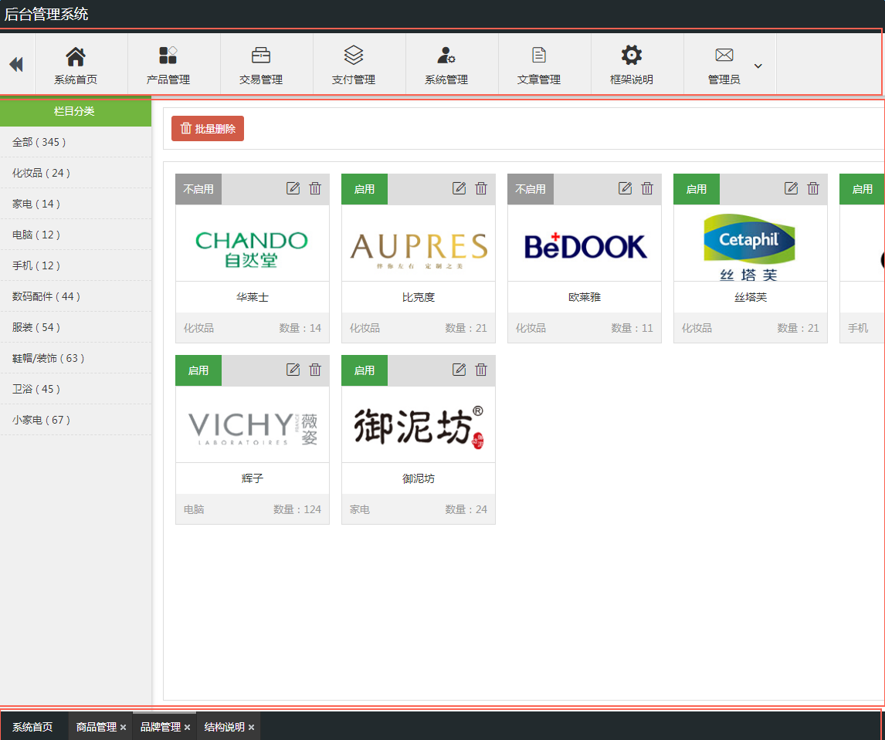
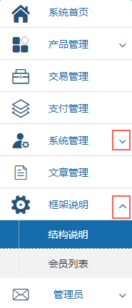
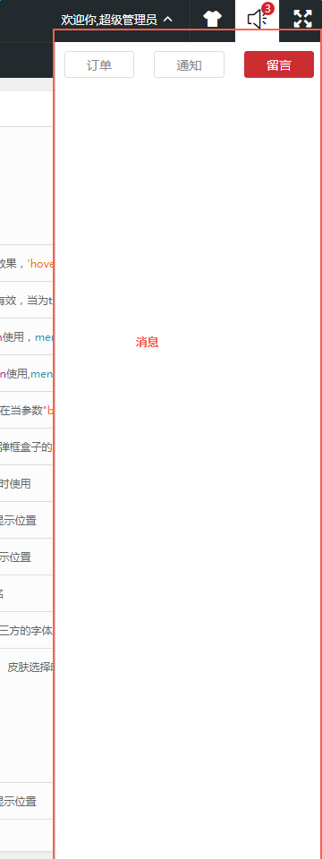
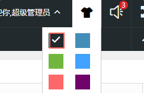
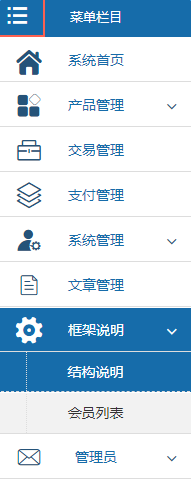
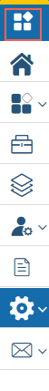

结构说明
提示：该模块依赖于BKframe控件,除首页其他内页需使用Hupage插件进行编辑操作
本框架支持移动端和PC端使用。不支持IE9以下的浏览器使用，如需要支持IE9以下浏览器请慎重使用。
主框架：（首页）
$(function() {
$("参数[1]").BKframe({
设置参数值[2]
});
[1]:该参数为设置框架的必备条件填写该参数才能使用框架效果，该参数可以为class属性也可以为ID属性
[2]:该元素设置框架里的不同属性实现效果，可以自定义元素扩展方法，具体参数值请看下面的说明

| 参数 | 参数名 | 默认值 | 说明 |
|---|---|---|---|
| bkposition | 菜单栏显示的方位 | left |
设置菜单栏目录板块显示的方向，left为左侧，top为顶部，默认左侧显示，菜单栏显示方形改变布局也将发生改不

当显示位置在左侧时界面样式 
当显示位置在顶部时界面样式 |
| data | 菜单栏数据 | null | 设置菜单栏数据，格式
var data = [{ //声明数据源
id: 2,//默认设置显示页时该值必须保持为2,不为2时将出错 pid: 0, //二级以下菜单指明显示位置 url: "index_home.html", //地址自定义 但需要和homepage保持一致 icon: 'iconfont icon-home', //显示设置栏目图标 name: '系统首页', //栏目名称 } ] |
| hrederheight | 顶部高度 | 50 | 设置顶部显示板块的高度值，默认为50，可自定义高度。 |
| footerheight | 底部高度 | 40 | 设置底部显示板块的宽度，默认40,可自定义高度，40高度值比较适合,该值主要设置选项卡的高度。 |
| sortmodeWidth | 图标菜单显示宽度 | 60 | 设置菜单显示为图标菜单时，默认60，可自定义。 |
| menuheight | 菜单栏高度 | 80 | 该方法只使用菜单栏显示在顶部横排时有效 ,当参数"bkposition":top时该值有效 |
| menuWidth | 菜单栏宽度 | 200 | 当差菜单栏显示在左侧或右侧竖排显示时该方法有效 ,当参数"bkposition":left时该值有效 |
| minStatue | 显示/隐藏菜单栏 | false | 默认设置当前菜单栏是否显示或隐藏(true/false) |
| cookieDate | cookie时间（单位天） | 7 | 设置主题皮肤有效显示时间（单位天） |
| header | 顶部盒子 | 自定义 | 设置框架顶部布局层名称 |
| footer | 底部盒子（选项卡盒子） | 自定义 | 选项卡显示盒子当参数"bkposition":top时该布局盒子显示在顶部，当参数"bkposition":left时显示位置在header层下面 |
| content | 内容盒子 | 自定义 | 用于显示内容架构的布局盒子内页界面将显示在该盒子里面 |
| message | 窗体显示 | 自定义 | 设置窗体显示位置(frame)，显示各不相同的内页frame，布局位于content盒子的里面 |
| menuModule | 菜单盒子 | 自定义 | 用于显示菜单位置，和data一起使用。 |
| menu | 菜单盒子 | 自定义 | 设置菜单显示的样式 |
| mouIconOpen | 展开 | 自定义（字体库图标名） | 菜单展开用的图标，只适合用字体图标，不限于字体库的名称
 |
| mouIconClose | 隐藏 | 自定义（字体库图标名） | 菜单隐藏用的图标，只适合用字体图标，不限于字体库的名称 |
| menuopt | 事件 | string(click/hover) | 菜单栏鼠标执行的事件，'click'为点击事件，点击展示栏目效果，'hover'为鼠标移动到菜单栏上是执行效果 |
| rightclick | 右键操作 | false | 设置鼠标点击右键，当为false时鼠标点击右键有效，当为true时鼠标点击右键无效 |
| closebtn | 隐藏 | 自定义 | 点击用于隐藏菜单栏配合showbtn使用，menuModule |
| showbtn | 显示 | 自定义 | 点击用于显示菜单栏配合closebtn使用,menuModule |
| slide | 滑动盒子 | 自定义 | 用于设置菜单栏超出显示区域进行滑动，该方法只在当参数"bkposition":top时该值有效 |
| boxname | 盒子 | 自定义 | 定义一个盒子，设置你需要弹框盒子的名称 |
| Promp | 提示 | 自定义 | 用于设置提示盒子时使用 |
| iframe | 窗体 | 自定义 | 用于设置内容窗体显示位置 |
| tabs | 选择卡 | 自定义 | 用于设置选项卡显示位置 |
| titlename | 名称 | 自定义 | 给菜单栏命名 |
| iconfont | 字体库名称 | 自定义 | 用于设置字体库名称，第三方的字体库名称。 mouIconOpen mouIconClose iconsort iconsortg |
| Bombboxinfo | 消息盒子 | 自定义 |
 用于设置消息盒子显示层样式 |
| boxname | 弹框盒子(table切换) | '.Bombbox' |
模块指定class clickBombbox//点击事件 Bombbox//显示内容 selected//默认显示时添加该class到clickBombbox中 |

| 默认系统图标 | 现有参数 | 默认值 | 说明 |
|---|---|---|---|
| 字体图标 |
mouIconOpen:, // 菜单 下箭头 mouIconClose, // 菜单 上箭头 iconsort:,//图文展示栏目 iconsortg:,//图标展示栏目 iconExpand:, //全屏图标 iconShrink:,//全屏返回图标 iconDelete://删除图标 iconHome:,//默认首页显示图标 |
iconfont字体库图标 | 设置后台系统框架默认的展示图标 |
| 字体图标 | iconSkin | icon-duigou |
 皮肤选择时显示的图标 |
| 字体图标 | iconsort | 自定义（字体库图标名） |
 设置菜单栏显示模式为图文模式下的样式 |
| 字体图标 | iconsortg | 自定义（字体库图标名） |
 设置菜单栏显示模式为图标模式下的样式 |